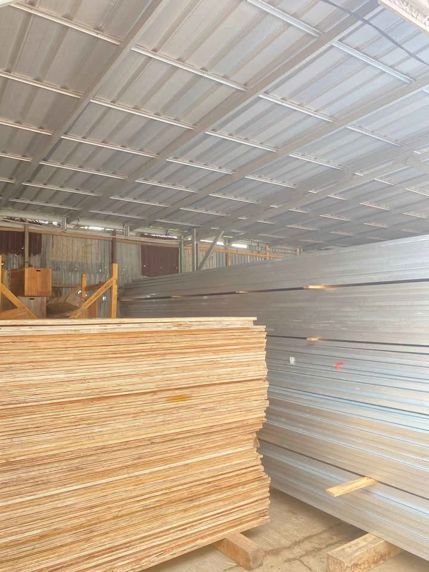
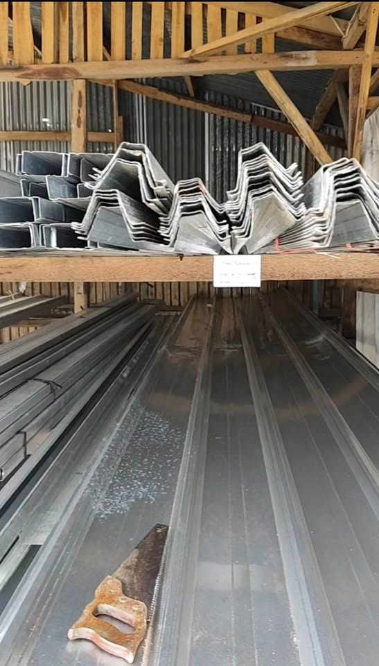
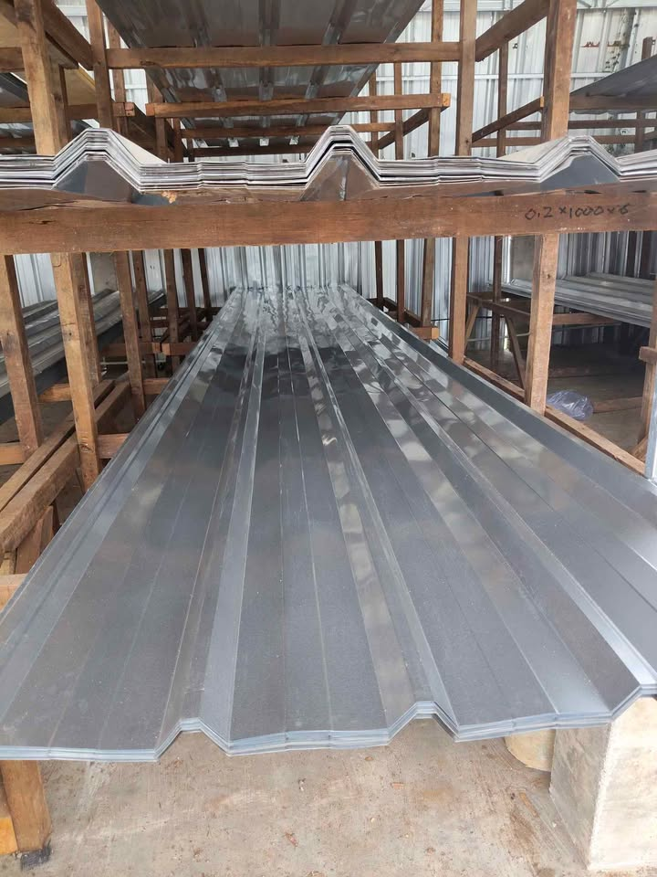

Triplek
papan kayu lapis (plywood) yang dibuat dari lapisan-lapisan kayu tipis (veneer) direkatkan silang untuk kekuatan, fleksibel, dan sering digunakan untuk furnitur, partisi, atau pelapis dinding karena lebih tahan retak daripada kayu solid

Atap Spandek
atap metal tipis seperti Spandek/Spandex atau Galvalum yang sering digunakan bersama rangka baja ringan,.

Kanal C Baja Ringan
lembaran kayu lapis dengan ketebalan bervariasi (umumnya 9mm, 12mm, hingga 18mm atau lebih) yang lebih kuat dan awet

Kanal C dan Ring
C Baja Ringan – Solusi rangka atap kuat, rapi, dan tahan lama.

Kanal C dan Ring
material bangunan inovatif berupa lembaran baja ringan yang dilapisi campuran aluminium (sekitar 55%), seng (sekitar 43,5%), dan silikon (sekitar 1,5%).